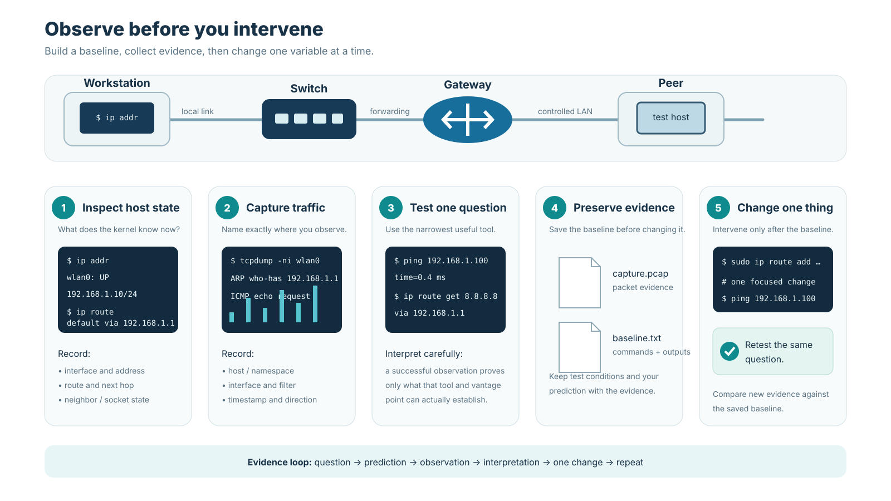

Workbench · Laboratory Bootcamp
Workbench — Learn to Observe the Network
How do we observe and control networking from one Linux machine?

Why this chapter matters
Section titled “Why this chapter matters”A networking experiment can fail because the protocol is wrong, because the host is misconfigured, because a required tool is missing, because a route points somewhere unexpected, or because the student is observing the wrong interface.
Before building transport protocols, routers, BGP policy, overlays, or distributed services, we need a repeatable way to answer a simpler question:
What does this Linux host currently believe about networking, and what evidence supports that belief?
M00 establishes the evidence vocabulary used throughout the book. The goal is not to memorize every command. It is to learn which system view answers which question.
Pause and predict.
curl https://example.com/fails. Does that tell you whether the failure is DNS, routing, TCP, TLS, HTTP, or the remote service? No.curlis useful precisely because it crosses many dependencies—but that also makes it a poor root-cause diagnosis by itself.
1. Your local host is already a complete networked system
Section titled “1. Your local host is already a complete networked system”Even before creating a laboratory topology, a Linux host contains networking state such as:
processes
↓
sockets
↓
interfaces + addresses
↓
routes + neighbor state
↓
queues / firewall / policy
↓
NIC + driver + physical/virtual linkIt also contains resolver configuration, local caches, namespaces, and virtual interfaces.
A Web request can interact with several of these structures before a frame leaves the machine.
This is the first systems habit of the course:
Do not treat “the network” as a black box when the host already exposes inspectable state.
2. Interfaces define where the kernel can attach networking state
Section titled “2. Interfaces define where the kernel can attach networking state”An interface is an OS-visible network attachment. It may represent:
- loopback,
- physical Ethernet or Wi-Fi,
- a virtual Ethernet endpoint,
- bridge,
- tunnel,
- VPN device,
- container/VM attachment.
Inspect with:
ip link
ip addressAsk four questions:
- Is the interface present and operational?
- Which addresses and prefixes belong to it?
- Is it the interface the route actually selects?
- Is it in the namespace you think it is?
Interface names such as eth0 are conventions, not universal truths. Always inspect the actual machine.
3. Loopback is a real protocol path without a physical network
Section titled “3. Loopback is a real protocol path without a physical network”The loopback interface lets applications use the normal IP and transport stack without sending packets onto an external medium.
This makes localhost experiments valuable because they preserve:
- socket semantics,
- transport state,
- application framing,
- many kernel code paths,
while removing variables such as Wi-Fi, switches, routers, and Internet routing.
A successful localhost experiment proves less than a successful remote experiment—but often exactly the thing you need to isolate first.
4. Addresses and prefixes describe local identity and routing scope
Section titled “4. Addresses and prefixes describe local identity and routing scope”An address such as:
192.0.2.20/24contains an address plus a prefix length.
In M00, you only need to recognize that the prefix length influences which destinations are considered directly connected and which require another route or gateway.
Inspect addresses with:
ip addressLater chapters formalize subnetting and longest-prefix matching. Here, the goal is to read the state the kernel already has.
5. Routing state answers “where would this destination go next?”
Section titled “5. Routing state answers “where would this destination go next?””Before transmitting an IP packet, the kernel selects a route.
Useful commands:
ip route
ip route get 198.51.100.10A route can identify:
- destination prefix,
- next hop,
- output interface,
- metric or policy information.
ip route get is especially useful because it asks the kernel for the route it would use for one concrete destination.
That is stronger evidence than visually scanning a route table and guessing.
6. A default route is a fallback, not the final destination
Section titled “6. A default route is a fallback, not the final destination”A line such as:
default via 192.0.2.1 dev eth0means roughly:
“For destinations not matched by a more specific route, send toward this next hop using this interface.”
The gateway is usually the next router, not the final remote server.
M05 will explain why more-specific prefixes override the default route. For now, recognize the distinction between:
final IP destination
≠
local next hop7. Neighbor state answers “how do I reach that next hop on this local link?”
Section titled “7. Neighbor state answers “how do I reach that next hop on this local link?””An IP route can select a next-hop IP and interface, but Ethernet-like delivery still needs a link-layer address.
Inspect local neighbor state with:
ip neighEntries may appear reachable, stale, incomplete, failed, or in other OS-specific states.
The dependency is:
usable IP route
+
usable next-hop resolution
↓
frame can be constructed for local deliveryM04 explains ARP and IPv6 Neighbor Discovery in detail.
8. Sockets connect application processes to transport state
Section titled “8. Sockets connect application processes to transport state”Sockets are communication endpoints exposed by the operating system.
Useful views include:
ss -lntup
ss -tn
ss -unA listening TCP socket proves that the local host has an endpoint waiting on an address/port under its current namespace and privilege context.
It does not prove that:
- a remote client can route to it,
- a firewall allows the traffic,
- TLS will succeed,
- the application will answer correctly.
Ports identify transport endpoints, not physical switch ports.
9. Processes, namespaces, and privileges change what you can see and modify
Section titled “9. Processes, namespaces, and privileges change what you can see and modify”Some socket details, route operations, queue configuration, and packet captures require elevated privileges.
The course should not normalize “run everything as root.”
Prefer:
- least privilege,
- disposable namespaces/containers for destructive experiments,
- explicit teardown,
- clear separation between observation and modification.
Later, M12 uses namespaces as first-class network objects. In M00, simply remember that two processes on one physical host can have different network views.
10. DNS tools answer naming questions
Section titled “10. DNS tools answer naming questions”dig exposes DNS-oriented evidence:
dig example.comInspect:
- query name/type,
- answer records,
- TTL,
- response code,
- resolver/server used.
A correct DNS answer proves something about name resolution at that observation point.
It does not prove the resulting server is reachable or healthy.
Also remember that applications can use resolver libraries, local caches, proxies, or service-specific resolution paths that differ from a direct dig command.
11. Application tools are broad end-to-end probes
Section titled “11. Application tools are broad end-to-end probes”curl is extremely useful because it can expose several stages of an HTTP(S) interaction:
curl -v https://example.com/Depending on the request and build, the output can include evidence about:
- name resolution,
- selected address,
- transport connection,
- TLS negotiation,
- HTTP request/response.
That breadth is both strength and limitation.
When curl fails, ask which earlier dependency must be isolated next rather than treating the final error message as the root cause.
12. Packet capture shows traffic at one chosen observation point
Section titled “12. Packet capture shows traffic at one chosen observation point”Common tools include:
tcpdump,- TShark,
- Wireshark.
For example:
tcpdump -ni anyA capture is a time-ordered record of traffic visible at that capture point.
It is not a dump of the complete distributed system.
A packet can exist elsewhere without appearing at your capture point, and host offloads or encapsulation can make the same logical exchange look different on different interfaces.
13. Capture only traffic you are authorized to inspect
Section titled “13. Capture only traffic you are authorized to inspect”Course experiments should prefer:
- your own host,
- loopback,
- namespaces/containers,
- provided PCAPs,
- controlled lab services.
Do not capture unrelated users’ traffic on shared networks.
This is both an ethical rule and good experimental design: controlled traffic is easier to interpret.
14. Timestamps are measurements with assumptions
Section titled “14. Timestamps are measurements with assumptions”Packet timestamps are useful for latency analysis, but they depend on:
- capture location,
- clock source,
- timestamp resolution,
- kernel/NIC buffering,
- offloads,
- whether the event happened before or after the observation point.
A number printed with six decimal places is not automatically accurate to six decimal places.
M02 and M13 will return to measurement quality and reproducibility.
15. Offloads can make host-visible packets differ from wire-visible packets
Section titled “15. Offloads can make host-visible packets differ from wire-visible packets”Modern NICs and kernels may perform:
- checksum offload,
- segmentation offload,
- receive aggregation,
- batching,
- other acceleration.
A capture inside the host can therefore show packet sizes or checksum states that differ from the eventual physical-wire representation.
This is not necessarily a bug in Wireshark or the NIC.
It is evidence that the capture occurred at a particular architecture boundary.
16. Use one tool to answer one concrete question
Section titled “16. Use one tool to answer one concrete question”A useful workflow is:
| Question | Evidence |
|---|---|
| Which interfaces/addresses exist? | ip address |
| Which route would the kernel select? | ip route get |
| Is the next-hop neighbor resolved? | ip neigh |
| Which sockets are listening/connected? | ss |
| What does DNS return? | dig |
| What does the application interaction do? | curl -v |
| Which packets are visible here? | packet capture |
Troubleshooting gets easier when every command has a purpose stated before it is run.
17. Git and the course workflow remain local-first
Section titled “17. Git and the course workflow remain local-first”Git does not require GitHub.
A student can work entirely offline with:
git init
git status
git add ...
git commit ...
git logA remote repository adds collaboration, backup, and optional CI, but version control remains local.
This matters for the course design: poor or unavailable Internet access must not prevent core laboratory work.
18. Assignment export creates a standalone student workspace
Section titled “18. Assignment export creates a standalone student workspace”Download the student laboratory ZIP linked in the current chapter and extract it into a directory you own. Work inside its assignment/ directory; no access to the private course repository is required.
The exported workspace includes the material needed for that assignment, such as:
- instructions/objectives,
- starter code,
- public tests,
- student test directory,
- test runner,
- Makefile,
- referenced fixtures/topologies,
- optional CI workflow where configured.
The exported repository should remain useful without access to the course monorepo.
19. Transparent tests are executable parts of the specification
Section titled “19. Transparent tests are executable parts of the specification”The public runner supports commands such as:
make list-tests
make test
make test-case CASE=<substring>Students are expected to read the tests.
A transparent test is not a leak in the grading system. It is a concrete behavioral example that can be studied, extended, and reproduced.
The learning goal is to understand the protocol/system contract rather than guess hidden cases.
20. Student tests turn discovered edge cases into reusable knowledge
Section titled “20. Student tests turn discovered edge cases into reusable knowledge”Coding assignments include:
tests/official/
tests/student/When a student discovers a new boundary condition, it belongs in tests/student/.
That changes the question from:
“What trick might the grader use?”
into:
“What behavior have I not yet specified or tested?”
This is much closer to real systems engineering.
21. Optional CI should repeat local truth, not create a second grading universe
Section titled “21. Optional CI should repeat local truth, not create a second grading universe”An exported assignment may include a GitHub Actions workflow.
Its purpose is convenience and CI practice, not a hidden source of correctness.
The invariant is:
local transparent tests == optional CI testsIf GitHub is unavailable, the assignment remains fully testable locally.
22. Check capabilities without requiring every tool immediately
Section titled “22. Check capabilities without requiring every tool immediately”Run:
for tool in python3 git ip ss curl dig tcpdump; do
command -v "$tool" || true
doneCore course tooling needs only a small baseline such as Python and Git.
Other tools are module-specific. There is no pedagogical value in forcing students to install FRRouting, containerlab, Scapy, Wireshark, and every diagnostic utility before the module that actually uses them.
A missing optional tool is an environment capability to record, not automatically a failure of the networking concept being studied.
23. Worked investigation — explain one successful Web request from several evidence layers
Section titled “23. Worked investigation — explain one successful Web request from several evidence layers”Suppose:
curl https://example.com/succeeds.
Collect evidence such as:
ip address
ip route
ip route get <resolved-IP>
ip neigh
ss -tn
dig example.com
curl -v https://example.com/and, where authorized, a narrow packet capture.
Build a timeline:
name query / cached resolution
↓
selected destination address
↓
local route + next hop
↓
transport connection
↓
TLS/security setup
↓
HTTP request/responseThen label each observation by source:
application evidence
kernel state
packet evidenceThe exercise is successful when you can explain not only what happened, but which observation supports each claim.
24. Common environment and reasoning failures
Section titled “24. Common environment and reasoning failures”Missing command
Section titled “Missing command”This is an environment/tooling problem until evidence shows otherwise. Use the documented alternative or deterministic fixture when provided.
No packet-capture privilege
Section titled “No packet-capture privilege”The application may still work. Use supplied PCAPs/datasets or a controlled namespace/container where capture is allowed.
No GitHub connectivity
Section titled “No GitHub connectivity”Local Git and local transparent tests remain usable by design.
Hard-coded interface assumptions
Section titled “Hard-coded interface assumptions”The machine may use enp..., wlp..., virtual interfaces, or namespace-specific names. Inspect actual state.
Virtualized host treated as “wrong networking”
Section titled “Virtualized host treated as “wrong networking””VMs, containers, VPNs, and cloud hosts legitimately add interfaces, routes, NAT, and tunnels. Those are part of the system, not noise to ignore.
One command treated as proof of the whole path
Section titled “One command treated as proof of the whole path”A correct dig, ping, or ss result has a specific authority boundary. Do not let one successful layer stand in for all others.
Chapter summary
Section titled “Chapter summary”M00 establishes the evidence discipline used throughout the book:
- The host already exposes inspectable networking state.
- Interfaces, addresses, routes, neighbors, sockets, DNS, application tools, and packet captures answer different questions.
- A default route is a next-hop fallback, not the final remote destination.
- Packet captures are local observations whose interpretation depends on capture point and offloads.
- Use least privilege and controlled environments for experiments.
- Git, tests, and assignment work remain local-first.
- Transparent tests are executable specification, and student tests capture discovered edge cases.
- A good investigation states what each command is intended to prove before running it.
Before continuing, choose one successful network interaction on your machine and explain it using at least one piece of application evidence, one piece of kernel state, and one packet-level observation or provided fixture.
Systems connections
Section titled “Systems connections”Interfaces, routes, neighbors, sockets, processes, namespaces, permissions, and capture hooks are operating-system state.
[ARCH]
Section titled “[ARCH]”NICs, drivers, DMA, interrupts, queues, segmentation, checksums, and offloads explain why host-visible evidence can differ from an abstract packet model.
[DIST]
Section titled “[DIST]”Even a simple Web request already crosses independently failing naming, transport, security, and service components.
Least privilege, capture authorization, encrypted traffic, and endpoint-controlled evidence establish important observation boundaries.
[PERF]
Section titled “[PERF]”Later performance claims depend on correct timestamps, workload descriptions, capture placement, counters, and system context.
Self-check
Section titled “Self-check”Without looking back:
- Which command asks the kernel for route selection to one destination?
- Distinguish
ip routestate fromip neighstate. - What does a listening socket prove, and what does it not prove?
- Why is
curluseful but too broad to diagnose root cause by itself? - Why should every packet capture record its interface/capture point?
- What core course work remains possible with no GitHub access?
- Where should students place their own transparent tests?
- Give one reason a host capture may differ from physical-wire packets.
- Why is a missing optional command an environment fact rather than automatically a protocol failure?
Then complete the M00 workbench lab and keep the resulting baseline notes for the troubleshooting work in M13.
Guided practice
Section titled “Guided practice”Time: 8–10 minutes
Materials: a local Linux shell; no Internet access required
Prediction
Section titled “Prediction”Before running anything, write down what you expect to find on a normal host:
- At least one interface that does not require a physical network.
- One or more IP addresses attached to interfaces.
- A routing decision for loopback traffic.
- Zero or more listening TCP sockets.
For each item, name the operating-system object you think will provide the evidence: interface state, address state, routing state, or socket state.
Worked example
Section titled “Worked example”Suppose a host reports an interface named lo with 127.0.0.1/8, a route for 127.0.0.0/8 through lo, and a process listening on 127.0.0.1:8000.
A useful explanation is not “the network is working.” It is more precise:
- the kernel has a loopback interface;
- the address belongs to that interface;
- the route keeps matching traffic inside the host;
- a process has asked the kernel to accept TCP connections on port 8000.
Each statement is supported by a different kind of state.
Guided micro-experiment
Section titled “Guided micro-experiment”Run these local commands and record only the lines you need:
ip -br link
ip -br addr
ip route get 127.0.0.1
ss -ltnNow answer:
- Which interface carries
127.0.0.1on your host? - Does the route lookup for
127.0.0.1require a gateway? - Pick one listening socket, if any exist. Is it bound to loopback, to a specific non-loopback address, or to a wildcard address?
- Which command above can tell you that a process is listening? Which commands cannot prove that fact?
Do not worry if your interface names or socket list differ from another machine. The mechanism, not the exact output, is the target.
Evidence to keep
Section titled “Evidence to keep”Keep four short facts: one interface fact, one address fact, one route fact, and one socket fact. For each, write the command that supports it and one claim that the command cannot establish. You should be able to explain those boundaries before moving to the knowledge check.
Knowledge check
Section titled “Knowledge check”Answer before running the lab.
- Which command would you use to inspect interface addresses? Local route selection for one destination? Neighbor state? Listening sockets?
- Explain the difference between an IP route and an ARP/NDP neighbor entry.
- Why can a packet capture not tell you every piece of state inside the local process or a remote router?
- What additional information does
ssprovide that a packet capture may not provide directly? - If
curlfails, why is “the network is down” an insufficient diagnosis? - Which parts of the course workflow still work if GitHub is unavailable for the entire semester?
- What is the difference between
tests/official/andtests/student/in an exported assignment? - Why should students inspect
make list-testsrather than treating tests as secret grader behavior? - Give one reason NIC/kernel offloads can make a host-side capture differ from the final wire representation.
After answering, record the tools available in your terminal and follow the local loopback HTTP/TCP exchange in the laboratory. A connected DNS/HTTPS comparison is optional.
Required laboratory
Section titled “Required laboratory”Complete the guided practice and knowledge check before starting this lab.
Download chapter + laboratory for offline study.
Extract the ZIP, read lesson.md and lab.md, then use assignment/ for the hands-on files.
This is an observation-based laboratory: preserve reproducible evidence as described below. There is no automated grader.
This bootcamp is deliberately observational. It introduces the local-first workflow and establishes a baseline snapshot students can return to during later troubleshooting modules.
1. Check the environment
Section titled “1. Check the environment”In your Linux terminal:
for tool in python3 git ip ss curl dig tcpdump; do
command -v "$tool" || true
doneRecord which optional networking tools are present. Do not install everything preemptively; later modules declare their own requirements.
2. Predict before inspecting
Section titled “2. Predict before inspecting”Before running each command, write down what you expect it to reveal:
ip address
ip route
ss -lntupFor each, identify whether the information belongs primarily to the application, socket/OS, network, or link view. Then predict what will change in ss after you start a local HTTP service in the next step.
3. Follow one application exchange
Section titled “3. Follow one application exchange”The required path works without Internet access. In one terminal, start a loopback-only HTTP service:
python3 -m http.server 8000 --bind 127.0.0.1In another terminal, inspect the listening socket and make one request:
ss -lntp
curl -I http://127.0.0.1:8000/Capture the loopback exchange with Wireshark/TShark or tcpdump when permissions allow. If packet capture is unavailable, preserve the ss output and the HTTP response headers as the required evidence.
When Internet connectivity and a configured resolver are available, add this optional comparison:
dig example.com
curl -I https://example.com/Compare the live DNS/HTTPS evidence with the local exchange, but do not treat connectivity to example.com as a correctness requirement.
Your required evidence should identify at least:
- one local interface and its IP address,
- the loopback interface,
- the default route if one is configured,
- one listening TCP socket,
- one local HTTP/TCP exchange,
- local and peer transport ports.
If you performed the optional connected comparison, also identify one DNS query/response and the remote transport endpoint.
4. Git and local testing
Section titled “4. Git and local testing”Keep your commands and observations in a local text file. Initialize a Git repository in your own evidence directory and inspect the working tree:
git init
git statusLater programming labs include a standalone test runner and visible tests in their downloads. This observation-based lab does not require the private course codebase or a GitHub Actions workflow.
5. Explain
Section titled “5. Explain”Create a short technical note containing commands and text evidence rather than screenshots. Answer:
- Which information came from the kernel rather than the packet capture?
- Which values changed between DNS and web traffic?
- What could you still learn if GitHub were unavailable for the entire semester?
- Which tool would you reach for first if a hostname resolved but a TCP connection failed?
There is no pass/fail programming suite for this lab: the learning objective is correct observation and interpretation. Later assignments use the transparent local test framework.